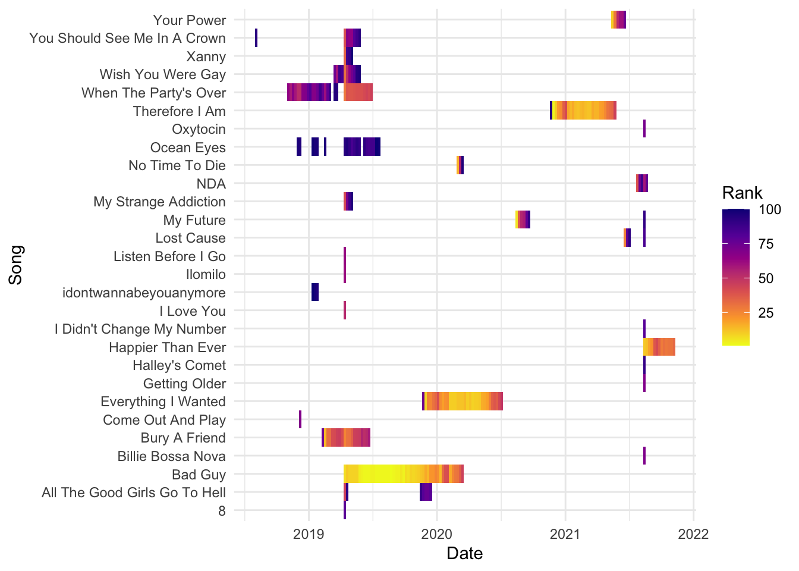
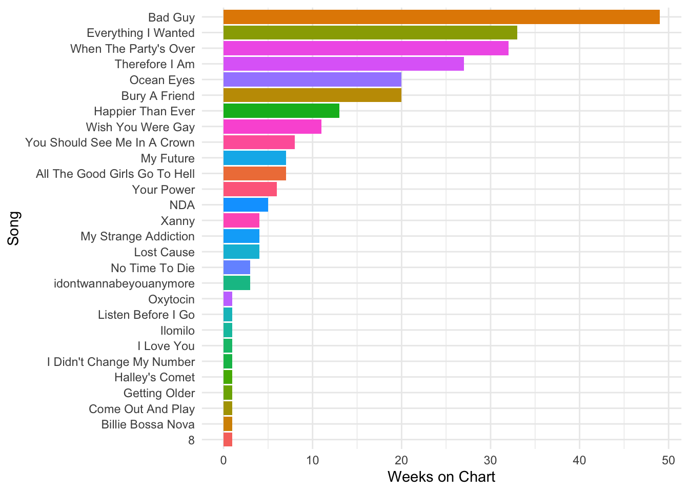

Billie Eilish: Chart Analysis
Billie Eilish is an American singer, songwriter, and performer known for her unique sound, dark aesthetic, and emotionally raw lyrics. She rose to fame in 2015 at the age of 13 with her breakout song “Ocean Eyes,” which she released on SoundCloud and which quickly went viral. Her full name is Billie Eilish Pirate Baird O’Connell, and she was born on December 18, 2001, in Los Angeles, California.
Billie Eilish: Song Rank Over Time
This plot visualizes the performance of Billie Eilish’s songs on the Billboard Hot 100 over time.
The highest rank song is Bad Guy
Billie Eilish: Heatmap of Songs Over Time
This heatmap visualizes the Billboard chart activity of Billie Eilish’s songs week by week over time.

The most popular time coincides with the year 2019-2020
Billie Eilish: Total Weeks on Chart by Song
This bar chart displays how many total weeks each Billie Eilish song spent on the Billboard Hot 100 chart.
